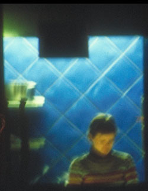
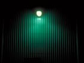
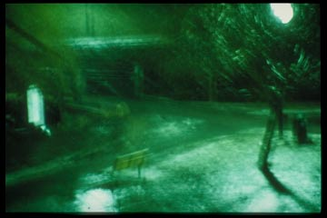

| 
ill. Rune Spaans |
Nattevake. Skrevet av Silje M. Ohren Strand
Jeg fikk ikke sove.
Jeg hadde ligget og vridd meg lenge, nå var det midt på natta, men hjernen jobbet på overtid, febrilsk, tenkte ut meninger om ting jeg ikke var blitt spurt om, som jeg neppe ville bli spurt om, og jeg ville bare sove. Jeg kastet meg fortvilet frem og tilbake. Midt ute i et tenkt første kapittel i min bok om Tingenes tilstand, om Ensomhet, skjønte jeg at det ikke gikk lenger. Jeg tuslet ut av senga med bare ben på det kalde gulvet og satte meg i vinduskarmen med en stor pute og et ullpledd. Det var januar og det var kaldt ute og det trakk inn ruta. Jeg ble sittende der og se på alt det som ikke skjedde der nede på gata. Det dalte noen snøfnugg. En sjelden gang kjørte en bil forbi. Jeg hørte motoren svakt gjennom vinduet, bilen suste forbi og var borte, det virket ikke som den rørte bakken, og jeg tenkte at det nesten var som å være under vann, alt var dempet, fjernt og vektløst. En hund bjeffet dempet, fjernt og vektløst langt borte fra. Usynlig. Nabolaget så helt annerledes ut på natta. Huset på skrå over gata, som jeg ellers så hver dag, men ikke for mitt bare liv kunne angitt fargen på, ruvet i en ytterst usmakelig mintgrønn fremtoning.  En ensom vakt sto der nede på post utenfor en port og var fjern og vektløs han også. Han skuttet seg i kulda. Jeg frøs litt selv og dro ullpleddet tettere om meg. Jeg tenkte at jeg var heldigere enn han. Han var på jobb og han måtte stå ute og fryse. Jeg fikk bare ikke sove. Hvor lenge måtte han stå slik tro? Sikkert lenge, sikkert helt til han ble avløst. Jeg bestemte meg for å se ham bli avløst. Jeg ville vokte vakta. Jeg hentet meg en øl i kjøleskapet og satte meg ned igjen. Hva kunne jeg vel ikke bli tilskuer til! Det var vel ikke uten grunn at vakta var så stor og sterk. Snart ville han nok bli nødt til å legge noen i bakken. Vakta stampet med føttene. Uhørlig. Vektløst. Jeg tok en slurk øl. Jeg kunne se vinden blåse. Lydløst. Mykt. Vakta varmet hendene sine, holdt i bønn opp for munnen. Jeg kunne se dampen når han blåste. Jeg tok en slurk til. Jeg fikk vondt av vakta. Han frøs slik der ute. Han stampet med føttene igjen og begynte å gå litt omkring. Først i en liten ring, så i en større. Så tilbake litt igjen. Nok engang rundt i ring, så fremover et stykke. Han tråkket seg forsiktig frem og tilbake, deretter rundt seg selv en stund. Hit eit steg og dit eit steg.  Plutselig så jeg mønsteret. Jeg forsto hva han holdt på med. Store kraftige karen! Med uniform, batong og merke i lua. Han gjorde det samme jeg hadde gjort selv så ofte som liten. Han tråkket seg hus i snøen. Et imaginært hus i snøen. Han tråkket et større rom som sikkert var stua, tenkte jeg, og fra den tråkket han en lang, smal gang som gikk til kjøkkenet, som hadde en åpning til en mindre gang som førte til soverommet. En ny dør åpnet seg direkte inn til badet. Han tråkket seg ut fra badet igjen, gjennom soverommet, og stampet ut en ny gang som gikk til et arbeidsværelse. Det måtte han jo ha. Slik tråkket han omkring lenge. Det var noe svært beroligende med å se et hus bli bygd på den måten. Huset hans fikk mange rom. Men ingen kjeller. Av praktiske årsaker. Det siste jeg så var at han tråkket seg til en entre før han stoppet opp og var på vakt igjen. Nå voktet han huset sitt. Jeg hadde bare en slump øl igjen. Vakta varmet hendene sine. Jeg kunne se dampen fryse til is og drysse som sølv ned på skotuppene hans. Øynene mine glippet. Jeg sovnet vektløst og rolig; En tolv-roms ettplans snøleilighet var godt bevoktet den natta.
|